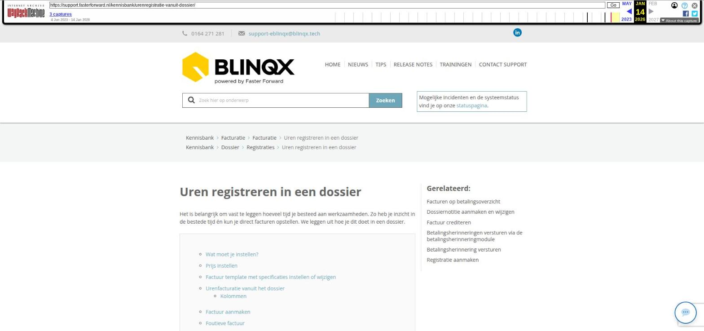

Tussenpersoon incasso posten handmatig prolongeren

Tekstinhoud
Title: Tussenpersoon incasso posten handmatig prolongeren | Support
URL: https://web.archive.org/web/20260114012920/https://support.fasterforward.nl/kennisbank/tussenpersoon-incasso-posten-handmatig-prolongeren/
Source element: <article>
---
Tussenpersoon incasso posten handmatig prolongeren
Het kan zo zijn dat de maatschappij geen prolongatieberichten via ADN/Aplaza aanlevert. Je wilt wel dat de productkaart up-to-date blijft en het financieel juist wordt verwerkt. In deze situatie is het mogelijk om de producten handmatig te laten prolongeren. Hieronder lees je hoe je dit kunt doen voor tussenpersoon incasso posten. Hier kan je meer informatie vinden over het handmatig prolongeren van maatschappij incasso posten.
Handmatig prolongeren instellen
Handmatig prolongeren verwerken
Handmatig prolongeren standaard voor maatschappij instellen
Handmatig prolongeren instellen
Om producten handmatig te laten prolongeren moet er verschillende zaken ingesteld staan, namelijk:
De factuurinstelling in de productkaart dient op handmatig prolongeren 'ja' te staan
In het rechterdeel dient een laatste prolongatiedatum ingevuld te zijn
De 'premietermijn per' bepaalt over wanneer er een handmatige prolongatie wordt klaargezet in het tabblad Handmatig prolongeren in de ADN module
Lees hier meer over het instellen van de factuurinstellingen.
Voorbeeld: indien de prolongatiedatum gevuld is met 01-04-2019 is en de premietermijn 'maand' is de verwachting dat de volgende prolongatie 01-05-2019 moet zijn.
Handmatig prolongeren verwerken
Om handmatig te prolongeren ga je via de ADN inbox naar het tabblad Handmatig prolongeren – Tussenpersoon Incasso.
Hier komen de posten naar voren die verwacht worden op basis van de factuurinstellingen in de productkaart.
Indien alles van de post goed is, klik je achter de post op de pijl om deze te verwerken. Er wordt dan een TP incasso boeking en factuur aangemaakt.
De facturen vind je wederom terug in het facturenoverzicht en in het dossier in het tabblad TP incasso boekingen. Deze kunnen verder verwerkt worden, zoals hier wordt beschreven bij 'Facturen verwerken'.
Handmatig prolongeren standaard voor maatschappij instellen
Het is mogelijk om het zo in te stellen dat bij bepaalde maatschappijen handmatig prolongeren automatisch op 'Ja' komt te staan bij het aanmaken van een nieuw product. Je stelt dit in via Beheer – Organisaties & Personen – betreffende maatschappij – tabblad Instellingen – Prolongaties. Let op: het instellen werkt dus niet met terugwerkende kracht, maar vanaf het moment van instellen wordt dit toegepast bij nieuw aangemaakte producten.
Laatste update: 15 oktober 2025
Tagged: incasso, tussenpersoon
Was deze informatie nuttig?
Ja Nee